Crittografia
Una raccolta di metodi crittografici, descritti nel
funzionamento e utili per nascondere a tua moglie i messaggi che mandi alle amanti.
keyboard_arrow_down
Cifrari per Sostituzione

Monografica
Monoalfabetica
Ogni carattere del testo in chiaro viene sostituito sempre dal corrispondente carattere del crittogramma, secondo una tabella di sostituzione unica.
Vai

Monografica
Polialfabetica
Ogni carattere del testo in chiaro viene sostituito da un carattere variabile del crittogramma, che si determina per mezzo di una chiave e della tabella di sostituzione
Vai
Poligrafica
Monoalfabetica
Ogni carattere del testo in chiaro viene sostituito sempre da uno [o più] caratteri corrispondenti del crittogramma, secondo una tabella di sostituzione unica.
Vai
Cifrari Composti

Il testo chiaro viene cifrato con un metodo ottenendo un crittogramma, che viene a sua volta processato con un altro metodo; questa operazione si chiama sovracifratura e può essere ripetuta molte volte.
Vai
Alcune precisazioni:
Testo in chiaro:
il messaggio da trasmettere.
Testo cifrato:
il crittogramma.
La chiave:
lo strumento che permette di crittare decrittare il testo in chiaro.